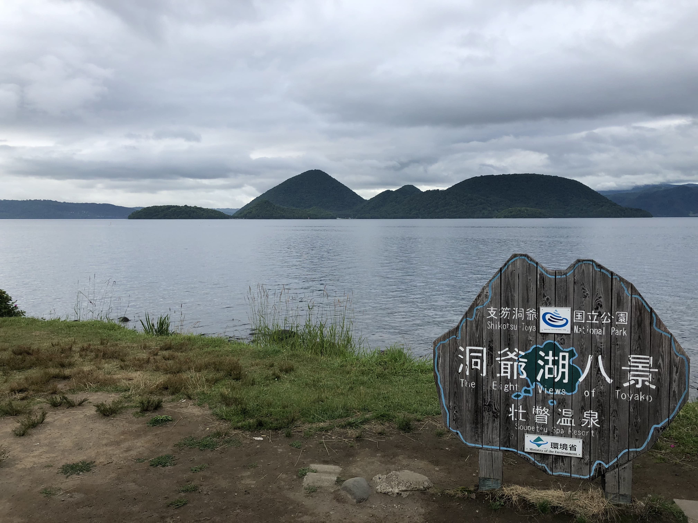
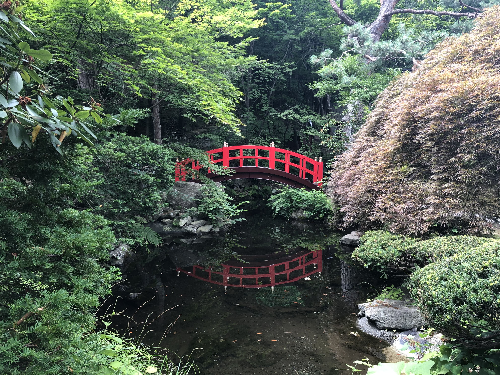

Greeting everyone, my name is Lu Han-Yun, and my English name is Julian. I am major in department of economics. The motivation that I choose this course is due to the interest of web applications and the principle of JavaScript. I have learned some programming languages such as R and C/C++, but not very dig in to them very well. Then I found that web programming are more attractive to me than other programming language, by this chance, I hope I can enjoy this course as much as possible.
And also I want to practicing my English writing and reading skills since I have been a period of time without writing any English article. On the other hand, I study Japanese for interest during this three years, and I hope I can use this skill, maybe, to build a trilingual web or something in the future. That must be pretty cool.
Beside Web Design, I also interest in Japanese culture and travel, as you can see background images of this website are the photos I took in Hokkaido in 2019. Hope I can visit there again after this epidemic. And I thinks Zen is the main idea for me to design UI, but still a lot of to learn, hope I can build a website full of Zen in the near future.
Recently I am curious about mental health and psychology since Covid pandemic has influence lots of people, not only physical aspect, but also mental aspect, so the article I choose for this course is about the research of anxiety and depression. I wish all of you who are reading this can be far away from those mental problems.
大家好！我是經濟四清劉瀚允，由於對網頁方面技術的好奇而選了這門課。雖然以前有接觸過如C/C++,R之類的程式語言，但相比網頁 少了許多的趣味性以及美感，於是便決定嘗試看看網頁方面的學習。另外就是自己的英文程度自大學後便沒有太顯著的成長，想藉此機會 更加鍛鍊自己的英文能力，藉此機會訓練英文文章的閱讀與寫作技巧。除此之外，我也在這三年間學了日文，希望未來能應用在這領域，做出 三語網站也說不定？那一定會很有意思。
除了網頁設計，我也對日本文化以及旅行很有興趣，如你所見這個網站的背景圖片是我於2019年在北海道拍攝的，希望疫情結束後能再造訪一次。 然後我想禪應該是我設計使用者介面的核心理念，但仍然有許多要學習的，希望我能在不遠的未來設計出富有禪意的網站。
最近我也對心理健康和心理學感到好奇，因為這場新冠疫情不只影響了人們的生理層面，也包含心理層面，所以在這門課中我選用的文章是關於焦慮及憂鬱的研究，希望在閱讀 這些的你們能遠離那些心理問題。